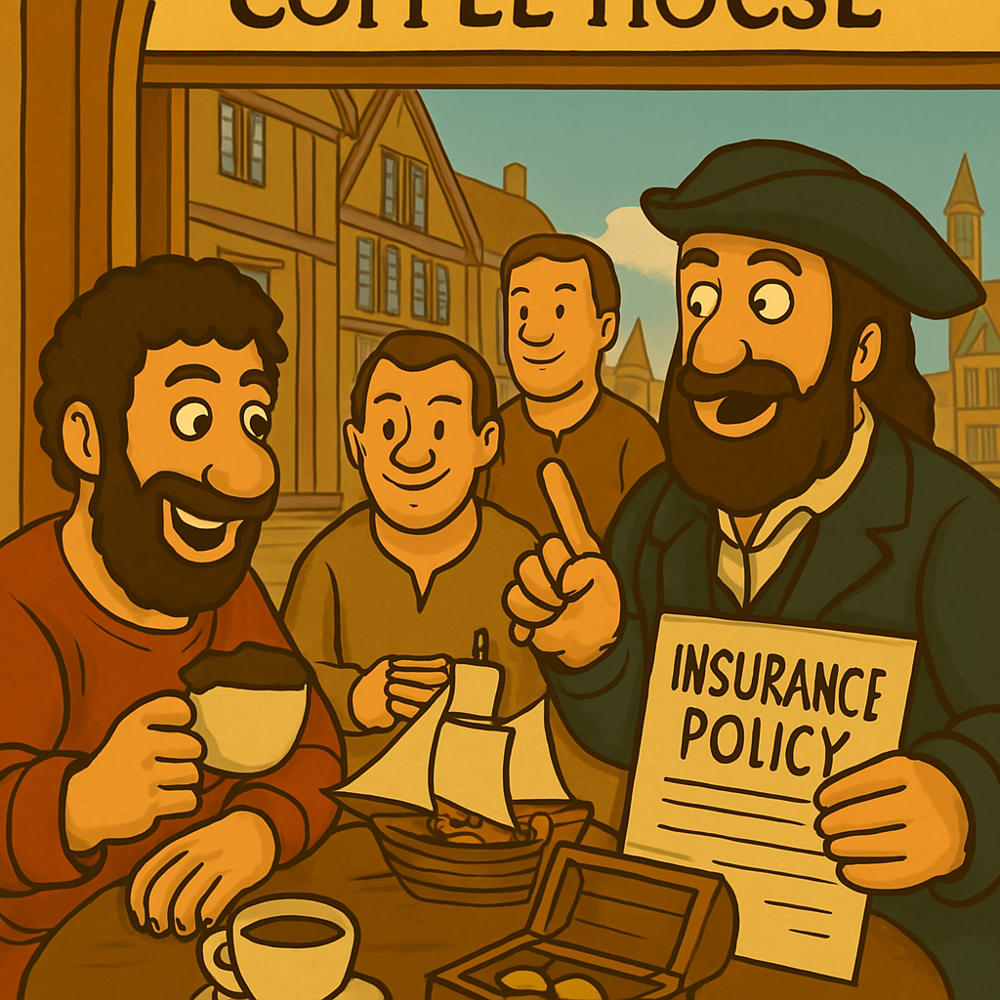

17세기 유럽은 상업 무역의 팽창과 함께 보험계리학이 과학으로 태동한 시대입니다. 확률론의 개발과 사망률 통계의 체계화가 핵심으로, 이전 시대의 경험적 접근에서 수학적 기반으로 전환되었습니다. 이 기간의 사건은 현대 보험의 보험료 계산 기초를 마련하였습니다.
17세기 배경은 르네상스 후 상업 자본주의의 성장입니다. 영국과 프랑스에서 무역 수요가 증가하며, 위험을 과학적으로 평가할 필요성이 대두되었습니다. 확률론은 도박 문제에서 시작되었으나, 곧 보험에 적용되었습니다.
The 17th century in Europe marked the birth of actuarial science as a science amid the expansion of commercial trade. The development of probability theory and the systematization of mortality statistics were central, shifting from the empirical approaches of previous eras to a mathematical foundation. The events of this period laid the groundwork for modern insurance premium calculations.
The backdrop of the 17th century was the growth of commercial capitalism following the Renaissance. The increasing trade demand in England and France necessitated the scientific evaluation of risks. Probability theory, which began with gambling problems, was soon applied to insurance.
주요 사건으로 1654년 블레즈 파스칼과 피에르 드 페르마의 서신 교환이 있습니다. 그들은 '점 문제(Problem of Points)'를 해결하며, 중단된 게임의 상금을 공정하게 나누는 확률론을 개발하였습니다. 이는 위험 확률을 계산하는 기초로, 수십 년 후 보험계리학의 개념적 토대가 되었습니다.
파스칼의 작업은 도박에서 보험으로 확장되어, 미래 사건의 확률을 예측하는 방법을 제시하였습니다.
A key event was the 1654 correspondence between Blaise Pascal and Pierre de Fermat. They solved the 'Problem of Points,' developing a probability theory to fairly divide the prize money of an interrupted game, laying the foundation for calculating risk probabilities, which became a conceptual basis for actuarial science decades later.
Pascal’s work extended from gambling to insurance, offering methods to predict the probabilities of future events.
그림 4.1: 파스칼과 페르마의 확률론 서신, 1654
1662년 존 그라운트의 《Natural and Political Observations Made upon the Bills of Mortality》는 런던 사망 통계를 분석한 최초의 책입니다.
그라운트는 인구 집단의 사망 패턴을 예측하여 생명표(life table)의 원형을 만들었습니다. 이는 인구통계학(demography)의 시작으로, 나이별 사망률을 추정하여 생명보험의 과학적 기반을 마련하였습니다.
그라운트의 분석은 질병과 나이의 상관관계를 밝히며, 보험 산업의 안정성을 높였습니다.
John Graunt’s 1662 book, *Natural and Political Observations Made upon the Bills of Mortality*, was the first to analyze London’s death statistics.
Graunt predicted mortality patterns in populations, creating a prototype of the life table. This marked the beginning of demography, estimating age-specific mortality rates to establish a scientific foundation for life insurance.
His analysis revealed correlations between diseases and age, enhancing the stability of the insurance industry.
1686년 에드워드 로이드의 커피하우스는 런던 해상 무역 상인들의 모임 장소로, 선박과 화물 보험 계약이 활발히 이뤄졌습니다. 이는 현대 로이드의 런던(Lloyd's of London)의 기원으로, 위험을 공유하는 리스크 풀링 제도의 초기 형태입니다. 상인들은 정보 공유를 통해 보험료를 결정하였으며, 이는 상업 보험 시장의 시작입니다.
In 1686, Edward Lloyd’s coffee house served as a meeting place for London maritime trade merchants, where ship and cargo insurance contracts were actively made. This was the origin of modern Lloyd’s of London, an early form of risk-pooling systems sharing risks. Merchants determined premiums through information sharing, marking the beginning of the commercial insurance market.
그림 4.2: 로이드 커피하우스의 보험 거래, 1686
1693년 에드먼드 할리의 생명표는 브레슬라우 도시의 사망 데이터를 바탕으로 나이별 생존 확률을 계산하였습니다. 이는 복리 이자와 결합하여 연금(annuities)의 보험료를 산출하는 방법으로, 미래 가치 할인(discounting)을 도입하였습니다. 할리의 작업은 보험계리학을 형식적 학문으로 만든 획기적 사건입니다.
In 1693, Edmond Halley’s life table calculated age-specific survival probabilities based on mortality data from the city of Breslau. Combined with compound interest, it provided a method to calculate annuity premiums, introducing future value discounting. Halley’s work was a groundbreaking event that formalized actuarial science as an academic discipline.
이 시대의 공통 테마는 확률과 통계의 결합입니다. 17세기 이전에는 위험 관리가 경험적이었으나, 이 사건들로 과학화되었습니다. 이는 18세기 상업 보험의 황금기로 이어집니다.
The common theme of this era was the integration of probability and statistics. While risk management was empirical before the 17th century, these events led to its scientific development. This paved the way for the golden age of commercial insurance in the 18th century.
| 연도 | 주요 인물/제도 | 설명 | 보험계리학과의 연관성 |
|---|---|---|---|
| 1654 | 파스칼 & 페르마 | 확률론 개발 (Problem of Points) | 위험 확률 계산의 기초 마련, 보험료 산출의 개념적 기반 |
| 1662 | 존 그라운트 | 사망률 통계 책 출간, 인구 패턴 분석 | 생명표 원형, 인구통계학 탄생, 사망 패턴 예측 |
| 1686 | 로이드 커피하우스 | 해상 보험 시장 형성, 정보 공유 | 상업 보험 제도의 시작, 리스크 풀링 실천 |
| 1693 | 에드먼드 할리 | 생명표 제작, 브레슬라우 데이터 활용 | 연금 보험료 계산 방법 개발, 미래 가치 할인 도입 |